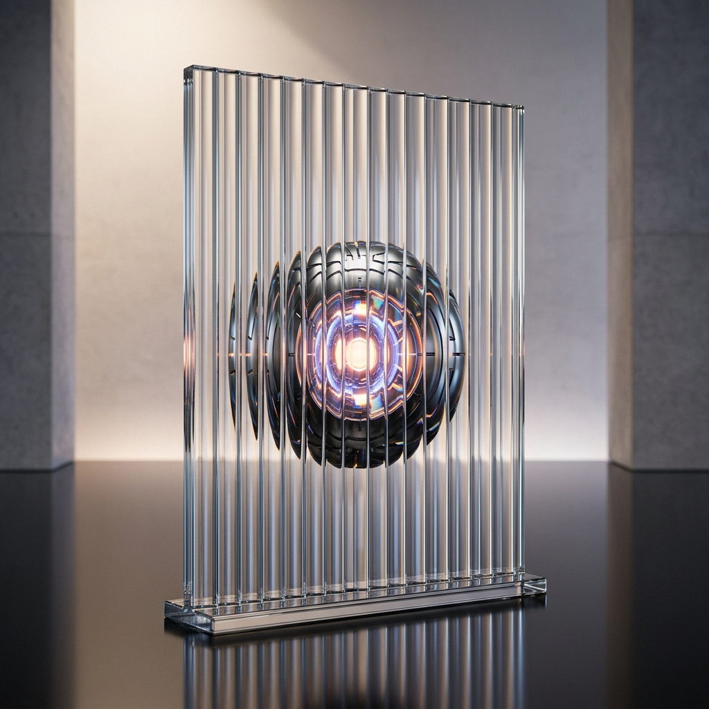

Ground the question
Bring domain expertise and lived experience to the decisions AI needs to make.

HUMAN INSIGHT FOR WHAT'S NEXT
COSMOS brings human expertise and real-world context into AI development—helping teams ask better questions, evaluate what matters, and build more useful systems.
THE COSMOS APPROACH
We help connect the people who understand the world to the teams shaping intelligent technology.
A PRACTICAL FEEDBACK LOOP
From a better-framed problem to a more thoughtful product, human context can make every step count.
Bring domain expertise and lived experience to the decisions AI needs to make.
Look beyond a right answer to nuance, safety, and usefulness in real situations.
Turn human feedback into clear signals teams can use to refine AI products and experiences.
FOR BUILDERS, PARTNERS & INVESTORS
We're shaping a more human approach to AI. If you're building, researching, or investing in that future, let's start a conversation.
Start a conversation